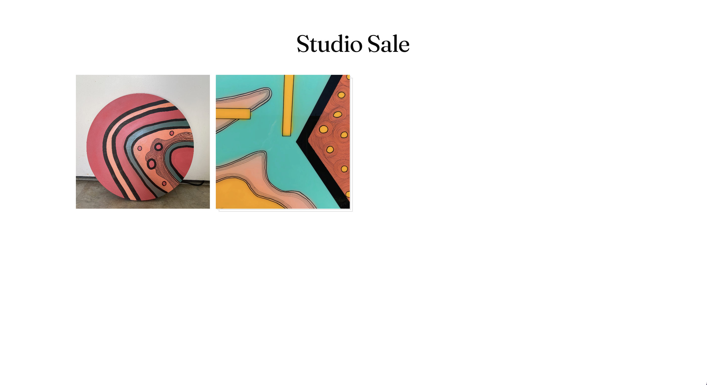

SuiteInventory
Mobile-first capture + listing layer that sits on top of Shopify, distributed as a Shopify app
Listing physical inventory is slow: photograph the piece from every angle, write a description, generate platform-specific copy, set a price, push it live. SuiteInventory collapses that into one mobile flow you can run from a storage unit. Photos, price, and notes in; Claude-generated listing copy and a Shopify draft product out. Curated pieces land on a public, Linktree-style sale page at suiteinventory.com/<seller>/<slug>.
Shopify owns checkout and the storefront. SuiteInventory owns the on-ramp — the painful capture-to-listing step. Everything runs as a single SvelteKit app on Cloudflare Workers, with D1 for data, R2 for images, and a raw-fetch Anthropic integration for copy generation. No separate API service, no SDKs to drift against the platform.